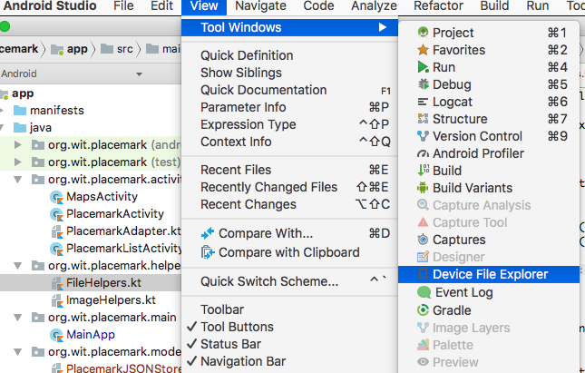
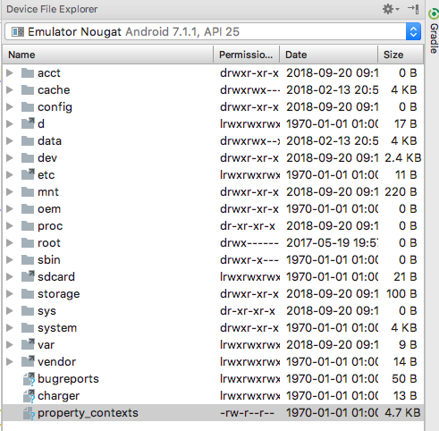
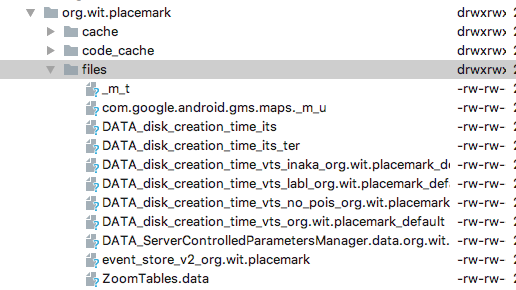
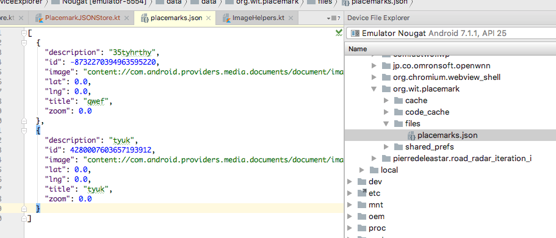

Save and restore placemarks from a JSON formatted file
If you create a new placemark - and set it location, note that when you click on the marker it shows its lat/lng. Move it around - and notice that the lat/lng in the panel never changes (even though it is at a different location).
See if you can fix this - such that it always shows the correct location.
(HINT: look up GoogleMap.OnMarkerClickListener and setSnippet)
Implement OnMarkerClickListener:
class MapsActivity : AppCompatActivity(), OnMapReadyCallback, GoogleMap.OnMarkerDragListener, GoogleMap.OnMarkerClickListener {
...
override fun onMarkerClick(marker: Marker): Boolean {
val loc = LatLng(location.lat, location.lng)
marker.setSnippet("GPS : " + loc.toString())
return false
}
...We need to make sure we listen for this event:
override fun onMapReady(googleMap: GoogleMap) {
...
map.setOnMarkerClickListener(this)
...
}This should work as expected now.
When you leave the PlacemarkActiviy, the location is not currently stored in the PlacemarkModel correctly. So when you edit a placemark, it is back at the default location.
Fix this by making location part of the placemark model, so we can edit and change the locations for existing markers.
First, extend the model to include additional fields:
@Parcelize
data class PlacemarkModel(var id: Long = 0,
var title: String = "",
var description: String = "",
var image: String = "",
var lat : Double = 0.0,
var lng: Double = 0.0,
var zoom: Float = 0f) : ParcelableWe are still keeping Location model for use with the MapsActivity
Make sure these fields are saved when a placemark us updated:
override fun update(placemark: PlacemarkModel) {
var foundPlacemark: PlacemarkModel? = placemarks.find { p -> p.id == placemark.id }
if (foundPlacemark != null) {
foundPlacemark.title = placemark.title
foundPlacemark.description = placemark.description
foundPlacemark.image = placemark.image
foundPlacemark.lat = placemark.lat
foundPlacemark.lng = placemark.lng
foundPlacemark.zoom = placemark.zoom
logAll();
}
}Then, remove Location from being a class member if PlacemarkActivity:
// var location = Location(52.245696, -7.139102, 15f)Initialise the location from the placemark object (of zoom is not 0.0. in which case we use a default location)
placemarkLocation.setOnClickListener {
val location = Location(52.245696, -7.139102, 15f)
if (placemark.zoom != 0f) {
location.lat = placemark.lat
location.lng = placemark.lng
location.zoom = placemark.zoom
}
startActivityForResult(intentFor<MapsActivity>().putExtra("location", location), LOCATION_REQUEST)
}Finally, make sure we recover and save the location when the maps activity finishes:
override fun onActivityResult(requestCode: Int, resultCode: Int, data: Intent?) {
super.onActivityResult(requestCode, resultCode, data)
when (requestCode) {
IMAGE_REQUEST -> {
if (data != null) {
placemark.image = data.getData().toString()
placemarkImage.setImageBitmap(readImage(this, resultCode, data))
chooseImage.setText(R.string.change_placemark_image)
}
}
LOCATION_REQUEST -> {
if (data != null) {
val location = data.extras.getParcelable<Location>("location")
placemark.lat = location.lat
placemark.lng = location.lng
placemark.zoom = location.zoom
}
}
}
}First revise how we create the placemarks store object:
package org.wit.placemark.main
import android.app.Application
import org.jetbrains.anko.AnkoLogger
import org.jetbrains.anko.info
import org.wit.placemark.models.PlacemarkMemStore
import org.wit.placemark.models.PlacemarkStore
class MainApp : Application(), AnkoLogger {
lateinit var placemarks: PlacemarkStore
override fun onCreate() {
super.onCreate()
placemarks = PlacemarkMemStore()
info("Placemark started")
}
}In the above class we are using a lateinit property. We have seen this before - review some of the motivation behind this property
We also will revise how we load the placemarks in PlacemarkListActivity.
First, introduce these new methods:
private fun loadPlacemarks() {
showPlacemarks(app.placemarks.findAll())
}
fun showPlacemarks (placemarks: List<PlacemarkModel>) {
recyclerView.adapter = PlacemarkAdapter(placemarks, this)
recyclerView.adapter?.notifyDataSetChanged()
}Change onCreate to call loadPlacemarks()
override fun onCreate(savedInstanceState: Bundle?) {
super.onCreate(savedInstanceState)
setContentView(R.layout.activity_placemark_list)
app = application as MainApp
toolbarMain.title = title
setSupportActionBar(toolbarMain)
val layoutManager = LinearLayoutManager(this)
recyclerView.layoutManager = layoutManager
loadPlacemarks()
}Finally, in onActivityResult() we also call loadPlacemarks():
override fun onActivityResult(requestCode: Int, resultCode: Int, data: Intent?) {
loadPlacemarks()
super.onActivityResult(requestCode, resultCode, data)
}This is the complete class at this stage:
package org.wit.placemark.activities
import android.content.Intent
import android.support.v7.app.AppCompatActivity
import android.os.Bundle
import android.support.v7.widget.LinearLayoutManager
import android.view.*
import kotlinx.android.synthetic.main.activity_placemark_list.*
import org.jetbrains.anko.intentFor
import org.jetbrains.anko.startActivityForResult
import org.wit.placemark.R
import org.wit.placemark.main.MainApp
import org.wit.placemark.models.PlacemarkModel
class PlacemarkListActivity : AppCompatActivity(), PlacemarkListener {
lateinit var app: MainApp
override fun onCreate(savedInstanceState: Bundle?) {
super.onCreate(savedInstanceState)
setContentView(R.layout.activity_placemark_list)
app = application as MainApp
toolbarMain.title = title
setSupportActionBar(toolbarMain)
val layoutManager = LinearLayoutManager(this)
recyclerView.layoutManager = layoutManager
recyclerView.adapter = PlacemarkAdapter(app.placemarks.findAll(), this)
loadPlacemarks()
}
private fun loadPlacemarks() {
showPlacemarks( app.placemarks.findAll())
}
fun showPlacemarks (placemarks: List<PlacemarkModel>) {
recyclerView.adapter = PlacemarkAdapter(placemarks, this)
recyclerView.adapter?.notifyDataSetChanged()
}
override fun onCreateOptionsMenu(menu: Menu?): Boolean {
menuInflater.inflate(R.menu.menu_main, menu)
return super.onCreateOptionsMenu(menu)
}
override fun onOptionsItemSelected(item: MenuItem?): Boolean {
when (item?.itemId) {
R.id.item_add -> startActivityForResult<PlacemarkActivity>(0)
}
return super.onOptionsItemSelected(item)
}
override fun onPlacemarkClick(placemark: PlacemarkModel) {
startActivityForResult(intentFor<PlacemarkActivity>().putExtra("placemark_edit", placemark), 0)
}
override fun onActivityResult(requestCode: Int, resultCode: Int, data: Intent?) {
loadPlacemarks()
super.onActivityResult(requestCode, resultCode, data)
}
}Make sure the app continues to run as expected.
Currently our placemarks are transient - when the app is closed the placemarks are lost. We would like to make them persistent - they are retained between app launches.
There are many strategies for implementing persistence - both local and remote (cloud). We will start with one of the simplest - storing the placemarks in a simple file.
Before we try this, you should get used to exploring the phones' file system. In Studio, select View->Tools Windows->Device File Explorer:

This reveals the following:

In this window, navigate to data/data/org.wit.placemark/files

We will be monitoring this directory - as it is the default location for an files you write/read in your app.
To keep our file access simple, we introduce some general purpose file helper functions:
package org.wit.placemark.helpers
import android.content.Context
import android.util.Log
import java.io.*
fun write(context: Context, fileName: String, data: String) {
try {
val outputStreamWriter = OutputStreamWriter(context.openFileOutput(fileName, Context.MODE_PRIVATE))
outputStreamWriter.write(data)
outputStreamWriter.close()
} catch (e: Exception) {
Log.e("Error: ", "Cannot read file: " + e.toString());
}
}
fun read(context: Context, fileName: String): String {
var str = ""
try {
val inputStream = context.openFileInput(fileName)
if (inputStream != null) {
val inputStreamReader = InputStreamReader(inputStream)
val bufferedReader = BufferedReader(inputStreamReader)
val partialStr = StringBuilder()
var done = false
while (!done) {
var line = bufferedReader.readLine()
done = (line == null);
if (line != null) partialStr.append(line);
}
inputStream.close()
str = partialStr.toString()
}
} catch (e: FileNotFoundException) {
Log.e("Error: ", "file not found: " + e.toString());
} catch (e: IOException) {
Log.e("Error: ", "cannot read file: " + e.toString());
}
return str
}
fun exists(context: Context, filename: String): Boolean {
val file = context.getFileStreamPath(filename)
return file.exists()
}Place this in the existing helpers package.
These functions are using the standard java.io streams facilities. However, they all require an additional paramater of type context, and this is used when opening the file. This context will be unique to each application - and we must make sure to acquire and use it when deailing with file I/O.
The Json file format is one of the most ubiquitous and easily understood file formats:
Google has a popular library for converting Java objects to/from Json:
We will use this library to convert our placemarks.
First, introduce the library as part of the build:
implementation "com.google.code.gson:gson:2.8.5"We can now bring in another implementation of our PlacemarkStore abstraction:
package org.wit.placemark.models
import android.content.Context
import com.google.gson.Gson
import com.google.gson.GsonBuilder
import com.google.gson.reflect.TypeToken
import org.jetbrains.anko.AnkoLogger
import org.wit.placemark.helpers.*
import java.util.*
val JSON_FILE = "placemarks.json"
val gsonBuilder = GsonBuilder().setPrettyPrinting().create()
val listType = object : TypeToken<java.util.ArrayList<PlacemarkModel>>() {}.type
fun generateRandomId(): Long {
return Random().nextLong()
}
class PlacemarkJSONStore : PlacemarkStore, AnkoLogger {
val context: Context
var placemarks = mutableListOf<PlacemarkModel>()
constructor (context: Context) {
this.context = context
if (exists(context, JSON_FILE)) {
deserialize()
}
}
override fun findAll(): MutableList<PlacemarkModel> {
return placemarks
}
override fun create(placemark: PlacemarkModel) {
placemark.id = generateRandomId()
placemarks.add(placemark)
serialize()
}
override fun update(placemark: PlacemarkModel) {
// todo
}
private fun serialize() {
val jsonString = gsonBuilder.toJson(placemarks, listType)
write(context, JSON_FILE, jsonString)
}
private fun deserialize() {
val jsonString = read(context, JSON_FILE)
placemarks = Gson().fromJson(jsonString, listType)
}
}Read this class and see if you can follow the implementation. These are a set of one off declarations:
val JSON_FILE = "placemarks.json"
val gsonBuilder = GsonBuilder().setPrettyPrinting().create()
val listType = object : TypeToken<java.util.ArrayList<PlacemarkModel>>() {}.typeThese are used in the implementations. These describe the filename, a utility to serialize a java class (pretty printing it) and an object to help in converting a JSON string to a java collection (recognising PlacemarkModels along the way)
To use the new store, we just need to switch it in the application object:
package org.wit.placemark.main
import android.app.Application
import org.jetbrains.anko.AnkoLogger
import org.jetbrains.anko.info
import org.wit.placemark.models.PlacemarkJSONStore
import org.wit.placemark.models.PlacemarkMemStore
import org.wit.placemark.models.PlacemarkStore
class MainApp : Application(), AnkoLogger {
lateinit var placemarks: PlacemarkStore
override fun onCreate() {
super.onCreate()
placemarks = PlacemarkJSONStore(applicationContext)
info("Placemark started")
}
}No other changes should be neccesssary.
Run the app now - and verify that you can create placemarks. Terminate the app, and see if the placemarks are still there when you relaunch the app.
Delete the app from the phone, and verify that there are no placemarks when you install and run it again.
Finally, locate the actual file in the Device File Explorer:

Placemark application so far:
Change back to using the PlacemarkMemStore instead of PlacemarkStoreRoom. The only change you need to make should be in MainApp.
Try some experiments to make sure the persistence is working as expected:
Complete the implementation of the update method in the PlacemarkJSONStore class. Use the corresponding method in PlacemarkMemStore as a guide (and don't forget to save changes to the file).
Currently we have no way of deleting placemarks. To support delete, you will need to extend the PlacemarkStore to support removal of placemarks, and then implement this in PlacemarkMemStore and PlacemarkJSONStore These are the implementations you will need:
fun delete(placemark: PlacemarkModel)Introduce this to PlacemarkStore now - and write implementations in PlacemarkMemStore and PlacemarkJSONStore classes :
override fun delete(placemark: PlacemarkModel) {
placemarks.remove(placemark)
} override fun delete(placemark: PlacemarkModel) {
placemarks.remove(placemark)
serialize()
}To trigger the actual deletion introduce a new delete button alongside the cancel button on the PlacemarkActivity. Pressing this button should trigger the delete method.